Mathematical and statistical foundations of symplectoR
Pablo Almaraz, RElab
Source:vignettes/articles/theory.Rmd
theory.RmdThis article is the technical companion to symplectoR. It develops, in one continuous exposition, the mathematics the package implements: the variational origin of accelerated gradient methods, the dissipative geometry that organises them, the discretization theory that makes them usable, the quantization that produces a global method, and the statistical layer that turns an estimation problem into an objective. Every structural claim is stated with its hypotheses, every algorithm with the equations it discretizes, and every quantitative claim is either reproduced by a live chunk below or by a regression test in the package. The other articles are practical; this one is not.
The reader is assumed comfortable with convex analysis at the level of Nesterov [1] and with Hamiltonian mechanics and geometric integration at the level of Hairer, Lubich and Wanner [2].
Notation and glossary of symbols
| Symbol | Meaning | Package |
|---|---|---|
| \(f\) | Objective function, minimised | sym_objective(f = ) |
| \(f^\star\), \(x^\star\) | Minimum value and a minimizer |
bm$f_star, bm$x_star
|
| \(d\) | Problem dimension | sym_objective(dim = ) |
| \(L\), \(\mu\) | Gradient Lipschitz constant and strong-convexity modulus | sym_benchmark(kappa = ) |
| \(h\) | Distance-generating function of the mirror geometry | Euclidean only in this release |
| \(D_h(y, x)\) | Bregman divergence \(h(y) - h(x) - \langle \nabla h(x), y - x\rangle\) | as above |
| \(X_t\), \(q\) | Continuous-time position; \(q\) is the same object in Hamiltonian coordinates | fit$path |
| \(V\), \(\dot X_t\) | Continuous-time velocity | finite differences of fit$path
|
| \(p\), \(r\) | Momentum; \(r\) is the Bregman momentum conjugate to \(q\) | internal kernel state |
| \(H\) | Hamiltonian | fit$diagnostics$energy |
| \(\omega\) | Symplectic two-form \(\mathrm{d}q \wedge \mathrm{d}p\) | not stored |
| \(\alpha_t, \beta_t, \gamma_t\) | The three Bregman time scalings | internal to slc_core
|
| \(\mathcal{E}_t\) | Lyapunov energy certifying the continuous rate | fit$diagnostics$energy |
| \(\eta(t)\) | Damping schedule of the presymplectic family | sym_control(damping = ) |
| \(\gamma\) | Damping constant of the conformal family | sym_control(gamma = ) |
| \(\varepsilon\), \(\mu\) (algorithmic) | Learning rate and momentum factor of the relativistic kernel | sym_control(eps = , mu = ) |
| \(\delta\) | Relativistic factor; bounds each position half-kick by \(1/\sqrt{\delta}\) | sym_control(delta = ) |
| \(\alpha\) (algorithmic) | Symplecticity interpolation, \(1\) conformal symplectic | sym_control(alpha = ) |
| \(C\), \(p\), \(\eta\) | Bregman constant, polynomial order, exponential rate | sym_control(C = , p = , eta = ) |
| \(\mathfrak{h}\) | Integration step in fictive time | sym_control(h = ) |
| \(\lambda(t)\) | Quantum schedule, increasing in \(t\) | sym_control(lambda = ) |
| \(\Psi(t, x)\) | Wavefunction of quantum Hamiltonian descent | fit$diagnostics$psi_prob |
| \(N\), \(\Delta x\) | Grid points per dimension and the resulting spacing | sym_control(N_grid = ) |
| \(\theta\) | Parameter vector of an inverse problem | sym_inverse(theta_bounds = ) |
| \(\mathcal{L}(\theta)\) | Loss functional over \(\theta\) | the value returned by the objective |
| \(k\) | Iteration index; also the delay in sampling steps in Part V | user-supplied |
Part I: the variational origin
Mirror geometry and the Bregman divergence
Fix a convex, continuously differentiable and strictly convex distance-generating function \(h\) on the domain. Its Bregman divergence
\[D_h(y, x) = h(y) - h(x) - \langle \nabla h(x),\, y - x \rangle \ \ge\ 0\]
measures the gap between \(h\) and its linearization at \(x\), vanishing exactly when \(y = x\) [3]. It is not a metric: it is asymmetric and violates the triangle inequality in general. Taking \(h(x) = \tfrac12 \lVert x \rVert^2\) recovers \(D_h(y, x) = \tfrac12 \lVert y - x \rVert^2\) and the Euclidean geometry, which is the case this release implements; taking the negative entropy on the simplex recovers the Kullback-Leibler divergence and mirror descent in the sense of Nemirovski and Yudin. The whole development below is written for general \(h\) and specialised to the Euclidean case at the point where the package implements it.
The Bregman Lagrangian and the ideal scaling conditions
The unifying object is the Bregman Lagrangian of Wibisono, Wilson and Jordan [4],
\[\mathcal{L}(X, V, t) \;=\; e^{\alpha_t + \gamma_t}\Big( D_h\big(X + e^{-\alpha_t} V,\ X\big) \;-\; e^{\beta_t} f(X) \Big),\]
parameterized by three smooth time scalings: \(\alpha_t\) controls the speed of the dynamics, \(\beta_t\) the rate of the objective, \(\gamma_t\) the damping. The associated action is \(\int \mathcal{L}(X_t, \dot X_t, t)\,\mathrm{d}t\) and the Euler-Lagrange equation is a second-order differential equation in \(X_t\).
Ideal scaling conditions. Impose
\[\dot\beta_t \le e^{\alpha_t}, \qquad \dot\gamma_t = e^{\alpha_t}.\]
Rate theorem. Under the ideal scaling conditions, every solution of the Euler-Lagrange equation of \(\mathcal{L}\) satisfies \(f(X_t) - f^\star = O(e^{-\beta_t})\).
Proof sketch. Define the energy functional
\[\mathcal{E}_t \;=\; D_h\big(x^\star,\ X_t + e^{-\alpha_t}\dot X_t\big) \;+\; e^{\beta_t}\big(f(X_t) - f^\star\big).\]
Differentiating along a solution and substituting the Euler-Lagrange equation, every term cancels except one proportional to \((\dot\beta_t - e^{\alpha_t})\), so \(\dot{\mathcal{E}}_t \le 0\) exactly when the first ideal scaling condition holds; the second condition is what makes the cancellation possible. Non-negativity of \(D_h\) then gives \(e^{\beta_t}(f(X_t) - f^\star) \le \mathcal{E}_0\), which is the claim. \(\square\)
Two consequences shape everything downstream. First, \(\beta_t\) is a free reparameterization, so arbitrarily fast continuous-time rates are available for free: the family is a single curve traversed at different speeds, and there is no continuous-time obstruction to acceleration. Second, precisely because the continuous problem is unobstructed, all the difficulty is transferred to the discretization, where the growing coefficients that produce the rate also produce instability. This is the central tension the package manages.
The two canonical subfamilies
Two choices of the scalings generate the methods implemented here.
The polynomial subfamily, with \(\alpha_t = \log p - \log t\), \(\beta_t = p\log t + \log C\) and \(\gamma_t = p \log t\) for \(p > 0\) and \(C > 0\), satisfies the ideal scaling conditions with equality in the first when \(C\) is at its critical value, and yields the rate
\[f(X_t) - f^\star = O\!\left(\frac{1}{C t^p}\right).\]
The case \(p = 2\), \(C = 1/4\) is the continuous limit of Nesterov’s method, the differential equation \(\ddot X + \tfrac{3}{t}\dot X + \nabla f(X) = 0\) studied by Su, Boyd and Candès. That member is the most oscillatory one of the family, which is a useful fact: historical practice fixed \(C = 1/4\) and never tuned it, and the tuning study of Duruisseaux and Leok [5] shows that smaller \(C\) damps the oscillatory perturbation of the underlying monotone flow and thereby admits far larger steps.
The exponential subfamily, with \(\alpha_t = \log \eta\), \(\beta_t = \eta t + \log C\) and \(\gamma_t = \eta t\), yields
\[f(X_t) - f^\star = O\!\left(e^{-\eta t}\right).\]
Under time dilation the two subfamilies are reparameterizations of one another, which is why the package fixes the order (\(p = 6\) or \(\eta = 0.01\)) and exposes only \((C, h)\) for tuning.
The Legendre transform and the Bregman Hamiltonian
Passing to the Hamiltonian picture with \(r = \nabla_V \mathcal{L}\) gives the Bregman Hamiltonian, which in the Euclidean separable case is
\[H(q, r, t) \;=\; \tfrac12 e^{\alpha_t - \gamma_t}\lVert r \rVert^2 \;+\; e^{\alpha_t + \beta_t + \gamma_t} f(q).\]
Specialising, the polynomial family gives
\[H_p(q, r, t) \;=\; \frac{p}{2}\, t^{-(p+1)} \lVert r \rVert^2 \;+\; C p\, t^{2p-1} f(q),\]
and the exponential family
\[H_\eta(q, r, t) \;=\; \frac{\eta}{2}\, e^{-\eta t} \lVert r \rVert^2 \;+\; C \eta\, e^{2\eta t} f(q).\]
The potential prefactors \(t^{2p-1}\) and \(e^{2\eta t}\) grow without bound. That growth is the acceleration mechanism, and it is simultaneously the source of the finite-precision blow-up that Part III cures. The kinetic prefactors decay at a matching rate, so the Hamiltonian is explicitly time dependent and the flow is not symplectic on the ordinary phase space; it is symplectic on the time-augmented phase space, which is the observation Part II exploits.
Part II: dissipative geometry
Symplectic and conformal symplectic flows
Let \(\omega = \mathrm{d}q \wedge \mathrm{d}p\) be the canonical two-form. A flow \(\varphi_t\) is symplectic when \(\varphi_t^\ast \omega = \omega\) and conformal symplectic when
\[\varphi_t^\ast \omega = e^{-\gamma t}\, \omega\]
for a constant \(\gamma > 0\): the form is not preserved but contracts at an exactly known rate, uniformly over phase space. The generating system is the mechanical Hamiltonian with linear friction,
\[\dot q = \nabla_p H(q, p), \qquad \dot p = -\nabla_q H(q, p) - \gamma p, \qquad H(q, p) = \frac{\lVert p \rVert^2}{2m} + f(q).\]
Along solutions \(\dot H = -\gamma \lVert p
\rVert^2 / m \le 0\), so \(H\)
is a Lyapunov function and every bounded orbit relaxes onto the critical
set of \(f\). This is the object family
A integrates, and the recorded quantity
fit$diagnostics$energy is exactly \(H\) evaluated along the discrete
trajectory.
Momentum methods are integrators, and which ones
The classification result of Franca, Sulam, Robinson and Vidal [6] is the reason the package treats momentum methods as physics rather than heuristics.
Classification. Polyak’s heavy ball, in the form \(v_{k+1} = \mu v_k - \varepsilon \nabla f(x_k)\), \(x_{k+1} = x_k + v_{k+1}\), is exactly the conformal symplectic Euler discretization of the system above under the identification
\[\mu = e^{-\gamma h}, \qquad \varepsilon = \frac{h^2}{m}.\]
Nesterov’s accelerated gradient is an integrator of the same system, of the same first order, that is not conformal symplectic: its transfer map contracts \(\omega\) by the additional, Hessian-dependent and therefore anisotropic factor \(I - (h^2/m)\nabla^2 f + O(h^3)\).
The consequence is a genuine trade rather than a free lunch. The
extra contraction slightly improves the asymptotic constant and
simultaneously erodes the stability margin, which is why Nesterov’s
method tolerates a smaller maximum step than structure-preserving
alternatives of identical cost. The package’s "rgd" kernel
realises both as parameter settings of one master iteration, and the
equivalence is verified numerically rather than asserted.
## Hand-coded references, identical to the ones the package regression-tests
bm <- sym_benchmark("quadratic", d = 5, kappa = 20, seed = 3)
obj <- sym_objective(bm)
x0 <- rep(0, 5); eps <- 0.02; mu <- 0.9; K <- 100
reference <- function(kind) {
x <- x0; v <- rep(0, 5); out <- matrix(NA_real_, K, 5)
for (k in seq_len(K)) {
if (kind == "nag") { # gradient evaluated at the look-ahead point
v <- mu * v - eps * bm$grad(x + mu * v); x <- x + v
} else if (kind == "heavy_ball") { # second-order accurate form
xh <- x + mu * v; v <- mu * v - eps * bm$grad(xh); x <- xh + v
} else { # classical momentum, gradient at the iterate
v <- mu * v - eps * bm$grad(x); x <- x + v
}
out[k, ] <- x
}
out
}
deviation <- function(kind) {
fit <- sym_optim(obj, x0, method = kind, keep_path = "full",
control = sym_control(kind, eps = eps, mu = mu, max_iter = K, tol_grad = 0))
got <- fit$path[-1, , drop = FALSE]
max(abs(got - reference(kind)[seq_len(nrow(got)), , drop = FALSE]))
}
deviations <- vapply(c("nag", "heavy_ball", "cm"), deviation, numeric(1))| Preset | Maximum deviation from the reference |
|---|---|
| nag | 4.440e-16 |
| heavy_ball | 1.443e-15 |
| cm | 0.000e+00 |
The contraction law itself is checkable rather than merely assertable. For a quadratic objective the classical-momentum map is affine, with transfer matrix
\[M = \begin{pmatrix} 1 - \varepsilon & \mu \\ -\varepsilon & \mu \end{pmatrix}, \qquad \det M = \mu,\]
so every phase-space area is multiplied by exactly \(\mu = e^{-\gamma h}\) per step, uniformly and independently of where in phase space the area sits. The chunk below verifies that the package kernel reproduces this map, then propagates a small square of initial conditions through it and measures the area against the predicted exponential.
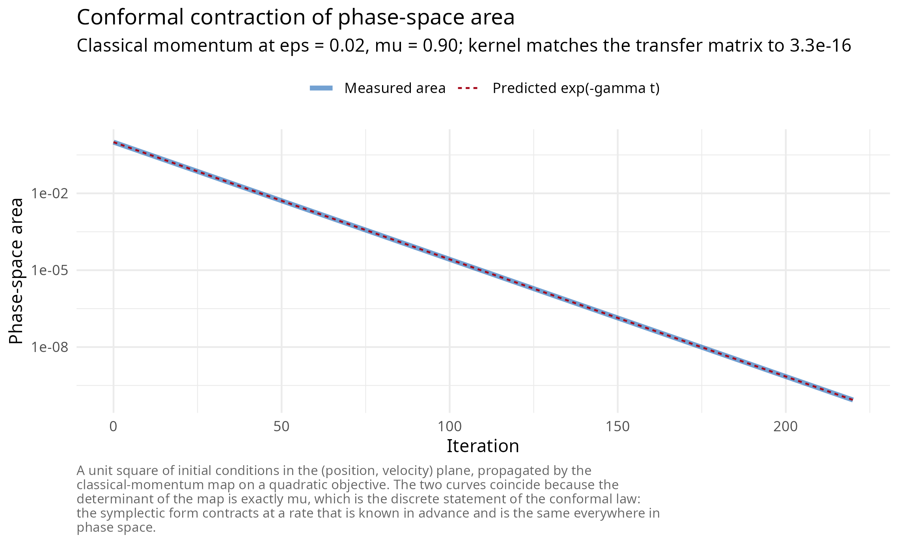
The two curves are indistinguishable because the identity is exact rather than approximate, and the printed deviation confirms that the shipped kernel is that map and not merely something close to it.
Relativistic kinetic energy as a derived trust region
Replacing the kinetic energy by its special-relativistic form,
\[T(p) = c\sqrt{\lVert p \rVert^2 + m^2 c^2}, \qquad \dot q = \nabla_p T(p) = \frac{c\, p}{\sqrt{\lVert p \rVert^2 + m^2 c^2}},\]
bounds the velocity by \(\lVert \dot q \rVert < c\) no matter how large the momentum becomes. Gradient clipping, usually introduced as an engineering patch, is here a consequence of the choice of kinetic energy, and the resulting method remains conformal symplectic. In the package parameterization \((\varepsilon, \mu, \delta, \alpha)\) with \(\delta = 4/(ch)^2\), each iteration performs
\[ \begin{aligned} x_{k+1/2} &= x_k + \frac{\sqrt{\mu}\, v_k}{\sqrt{\mu \delta \lVert v_k \rVert^2 + 1}}, & v_{k+1/2} &= \sqrt{\mu}\, v_k - \varepsilon \nabla f(x_{k+1/2}), \\ x_{k+1} &= \alpha x_{k+1/2} + (1 - \alpha) x_k + \frac{v_{k+1/2}}{\sqrt{\delta \lVert v_{k+1/2}\rVert^2 + 1}}, & v_{k+1} &= \sqrt{\mu}\, v_{k+1/2}, \end{aligned} \]
at one gradient per iteration. Each of the two position half-kicks is bounded in norm by \(1/\sqrt{\delta}\), so the per-iteration displacement never exceeds \(2/\sqrt{\delta}\): a trust region whose radius is a control parameter, with the fraction of steps that saturate it reported in the fit diagnostics. Setting \(\delta = 0\) and \(\alpha = 0\) recovers Nesterov exactly; \(\delta = 0\) and \(\alpha = 1\) the second-order heavy ball; \(\alpha = 1\) with any \(\delta\) is conformal symplectic and is the recommended configuration.
The claim that structure preservation buys stability rather than rate is also measurable. Sweeping the step size of each method on the same quadratic and recording where each stops converging locates the edge of the stable region directly.
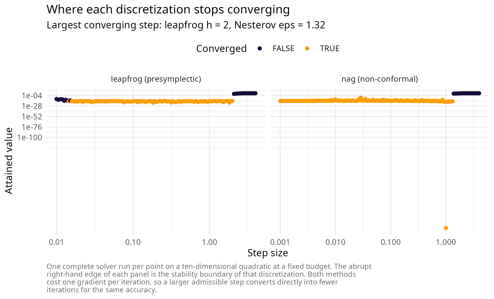
Presymplectic integration and the rate-matching theorem
For the explicitly time-dependent Bregman Hamiltonian the appropriate structure is presymplectic. Write the flow in the form
\[H(q, p, t) = e^{-\eta_1(t)} T(p) + e^{\eta_2(t)} f(q),\]
promote \(t\) to a coordinate with conjugate energy variable, and integrate the resulting autonomous system on the time-augmented phase space with a symplectic method. Operationally this amounts to a single rule: update the time variable with the same rule used for the positions.
Rate matching [7]. Let a presymplectic integrator of order \(r\) be obtained this way. Then the discrete iterates reproduce the continuous convergence rate up to an error \(O(h^r e^{-\eta_2})\), provided
\[\left(e^{L_\phi t} - 1\right) e^{-\eta_1(t)} < \infty\]
for the Lipschitz constant \(L_\phi\) of the flow map. The condition is
what separates the available damping schedules: \(\eta = \gamma t\) satisfies it outright and
is the safe, heavy-ball-like choice; \(\eta =
\gamma \log(1 + t)\) is Nesterov-like and sits at the edge of
validity; the mixed schedule \(\gamma_1 \log(1
+ t) + \gamma_2 t^{\delta}\) is the compromise the source study
recommends, and all three are exposed as
sym_control(damping = ).
The naive implementation overflows, because \(e^{\eta_2(t)}\) grows without bound. The package implements the stabilised leapfrog in which the rescaled momentum \(\bar p = e^{-\eta_2} p\) is propagated, so that only finite differences of \(\eta\) enter any exponential. When \(\eta_1 = \eta_2\) the rescaled momentum is the mechanical momentum and \(E = \tfrac12\lVert \bar p \rVert^2 + f(q)\) is exactly the Lyapunov function of the conformal picture, which is what the energy diagnostic records.
The order claim is verified against closed forms rather than asserted. The damped harmonic oscillator \(\ddot q + \gamma \dot q + q = 0\) with \(q(0) = q_0\), \(\dot q(0) = 0\) has the exact solution
\[q(t) = q_0 e^{-\gamma t/2}\left(\cos\frac{\omega t}{2} + \frac{\gamma}{\omega}\sin\frac{\omega t}{2}\right), \qquad \omega = \sqrt{4 - \gamma^2},\]
and the Nesterov-damped equation \(\ddot q + \frac{\gamma}{t+1}\dot q + q = 0\) has a closed form in Bessel functions of order \((\gamma \pm 1)/2\). Both ship as benchmarks.
bm_osc <- sym_benchmark("damped_oscillator", gamma_damp = 0.2, q0 = 10)
err_for_h <- function(h) {
K <- round(10 / h)
fit <- sym_optim(sym_objective(bm_osc), x0 = 10, method = "leapfrog", keep_path = "full",
control = sym_control("leapfrog", h = h, gamma = 0.2, damping = "constant",
max_iter = K, tol_grad = 0))
max(abs(fit$path[, 1] - vapply(fit$trace_iter * h, bm_osc$analytic, numeric(1))))
}
hs <- c(0.2, 0.1, 0.05, 0.025, 0.0125)
errs <- vapply(hs, err_for_h, numeric(1))| Step h | Maximum error | Ratio to the previous row |
|---|---|---|
| 0.2000 | 0.06099347 | NA |
| 0.1000 | 0.01519856 | 4.013108 |
| 0.0500 | 0.00379687 | 4.002915 |
| 0.0250 | 0.00094929 | 3.999713 |
| 0.0125 | 0.00023731 | 4.000197 |
An observed ratio of four under step halving is the signature of a second-order method, and it is what the table reports. On logarithmic axes the same statement is a straight line of slope two.
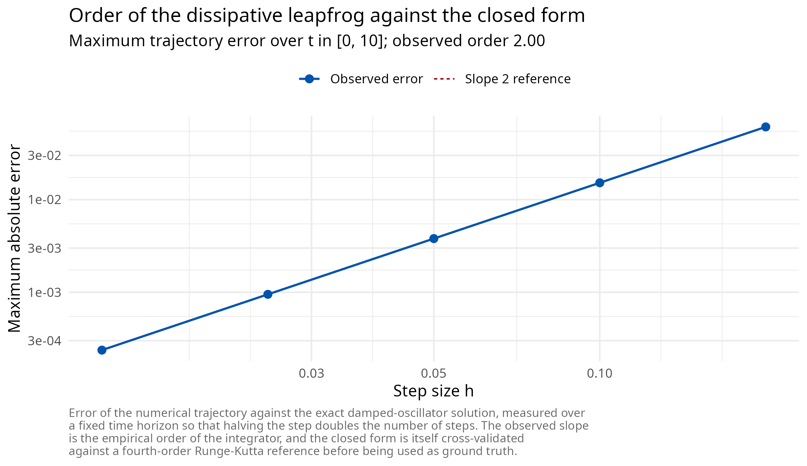
Part III: discretization theory
Splitting, Trotter and Strang
Every kernel in the package is a splitting method. If the vector field decomposes as \(\mathcal{A} + \mathcal{B}\) with individually solvable flows \(\varphi^{\mathcal{A}}_h\) and \(\varphi^{\mathcal{B}}_h\), the Lie-Trotter composition \(\varphi^{\mathcal{A}}_h \circ \varphi^{\mathcal{B}}_h\) is first-order accurate [8] and the symmetric Strang composition
\[\varphi^{\mathcal{A}}_{h/2} \circ \varphi^{\mathcal{B}}_{h} \circ \varphi^{\mathcal{A}}_{h/2}\]
is second-order accurate [9]. When each factor is symplectic the composition is symplectic, which is why splitting is the standard construction for structure-preserving integrators [10]. The leapfrog kernels are exactly Strang compositions of a kinetic and a potential flow; the quantum kernel of Part IV is a Lie-Trotter composition of the same two pieces in operator form.
Backward error analysis and the shadow Hamiltonian
The reason symplecticity matters over long horizons is backward error analysis [2]. A symplectic integrator applied to \(H\) is, to all orders in a formal power series, the exact flow of a nearby modified Hamiltonian
\[\tilde H = H + h^r H_r + h^{r+1} H_{r+1} + \cdots,\]
the shadow Hamiltonian. Because the numerical trajectory conserves \(\tilde H\) exactly rather than conserving \(H\) approximately, the energy error does not accumulate secularly: it oscillates in a band of width \(O(h^r)\) over exponentially long times. A non-symplectic integrator of the same order has no such conserved quantity and its energy drifts linearly. That distinction, not the order of accuracy, is what “structure preservation buys stability rather than rate” means concretely.
For the family B kernels the package can integrate the
conjugate-energy variable of the time-augmented extension alongside the
flow, so that \(H + \mathfrak{r}\) is
conserved by the exact extended dynamics and its numerical drift is a
per-run step-size health check. The monitor is exposed as
sym_control(diagnostics = TRUE), costs one extra objective
evaluation per iteration, and is off by default.
The distinction is visible in a single long run. The recorded mechanical energy of a symplectic integrator oscillates inside a band whose width is set by the step size and does not widen with time; there is no secular drift to accumulate.
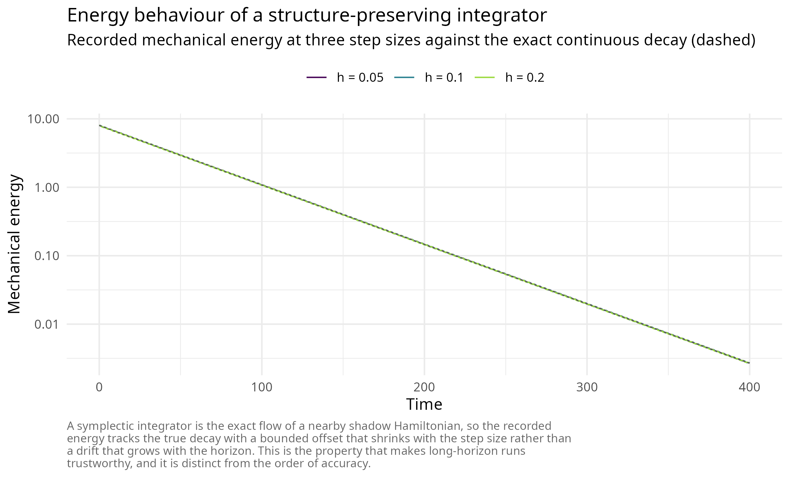
Why the naive discretization fails, and what replaces it
Explicit Euler applied directly to the Bregman flow is provably
unstable, a fact established in [4] together with
its historical remedy: Nesterov’s three-sequence scheme, which the
package ships at \(p = 2\) as
"wibisono". With \(\varepsilon =
1/L\), \(N > 1\) and \(C \le 1/(8N)\) it carries the explicit
estimate-sequence certificate
\[f(y_k) - f^\star \;\le\; \frac{\lVert x_0 - x^\star \rVert^2}{\varepsilon\, C\, k\,(k+1)},\]
and requesting \(C\) above the bound raises a warning rather than silently degrading.
bmq <- sym_benchmark("quadratic", d = 10, kappa = 50, seed = 11)
L <- max(bmq$meta$lambda)
x0 <- rep(2, 10)
fit_w <- sym_optim(sym_objective(bmq), x0 = x0, method = "wibisono",
control = sym_control("wibisono", eps = 1 / L, N = 2, C = 1 / 16,
max_iter = 2000, tol_grad = 0))
k <- fit_w$trace_iter
bound <- sum((x0 - bmq$x_star)^2) / ((1 / L) * (1 / 16) * pmax(k, 1) * (pmax(k, 1) + 1))
c(violations = sum(fit_w$f_trace - bmq$f_star > bound * (1 + 1e-8)),
recorded_iterates = length(k),
final_gap = fit_w$f_trace[length(k)] - bmq$f_star,
final_bound = bound[length(k)])
#> violations recorded_iterates final_gap final_bound
#> 0.000000e+00 2.000000e+03 5.191095e-16 2.001001e-03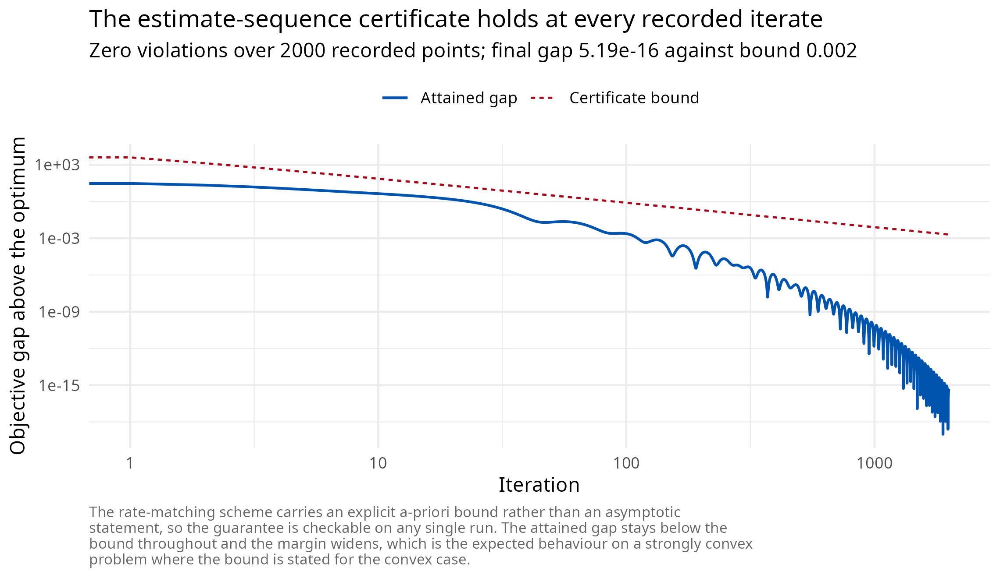
The geometric remedy, and the one the production kernels use, is
different: integrate symplectically in fictive time on the
Poincare-transformed extended phase space. The Poincare transformation
trades the explicit time dependence for an autonomous system in a
rescaled time variable, at which point a symmetric leapfrog composition
is available in closed form and is fully explicit at one gradient per
iteration. This is the construction of Duruisseaux and Leok [5] that "slc_poly" and
"slc_expo" implement.
The two safeguards, stated as algorithms
Raw symplectic Bregman integrators fail in two specific, reproducible ways, and both fixes ship enabled by default.
Gradient momentum restarting. Whenever the gradient opposes the last displacement, reset the momentum:
\[\text{if } \nabla f(q_k)^\top (q_k - q_{k-1}) > 0 \ \text{ then } \ r_k \leftarrow 0.\]
The rule is the Bregman analogue of the adaptive restart of
O’Donoghue and Candès [11], and its effect is not
marginal. On the ten-dimensional Rosenbrock valley the package’s
regression test reproduces the source study’s finding: with restarting,
"slc_expo" reaches 4.0e-17 in 550 iterations;
without it, 3.2e-5 after the full 5000-iteration
budget.
Temporal looping. The coefficients \(e^{\eta t}\) and \(t^{2p-1}\) grow without bound, so once the gradient has decayed to machine precision the growing coefficient re-inflates the roundoff floor and expels the iterate from the minimizer. The failure is invisible when stopping on a tolerance and fatal on a fixed budget. The cure rolls the time variable back on an instability criterion,
\[t \leftarrow \max(\epsilon,\ \beta t), \qquad 0 < \beta < 1,\]
with \(\beta\) and \(\epsilon\) exposed as
loop_beta and loop_eps. The package’s
regression test reproduces the published pathology exactly: on a
conditioned quadratic with a 20000-iteration budget, the unguarded run
reaches 1e-4 and then diverges to infinity, while the
guarded run holds 1.0e-30 at the end of the same
budget.
Both failure modes and both cures are reproducible in a few lines, and the size of each effect is the point.
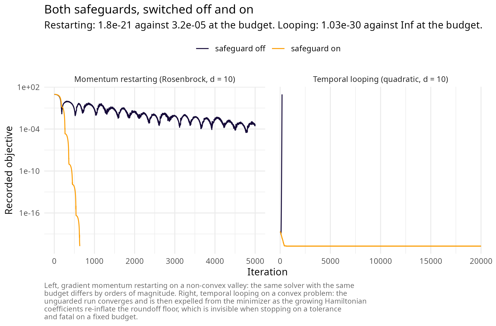
Part IV: quantization
From the Bregman Hamiltonian to a Schrodinger equation
Canonical quantization replaces the momentum by \(-i\nabla\) and the classical Hamiltonian by the corresponding operator. Applied to the Bregman Hamiltonian this gives the time-dependent Schrodinger equation of quantum Hamiltonian descent [12],
\[i\, \partial_t \Psi(t, x) \;=\; \left[\frac{1}{\lambda(t)}\left(-\tfrac12 \Delta\right) \;+\; \lambda(t)\, f(x)\right] \Psi(t, x),\]
with \(\lambda\) increasing in time. Early in the schedule the kinetic operator dominates and the density spreads over the whole box; late in the schedule the potential dominates and the density concentrates in the deepest basin. Measurement of \(|\Psi|^2\) returns candidate minimizers. Three schedules are implemented: \(\lambda = e^{2\sqrt{\mu} t}\) carries the strongly convex rate, \(\lambda = t^3\) the convex rate \(O(t^{-2})\) and is empirically strongest, and \(\lambda = \alpha t^{1/3}\) is the schedule of the global-convergence theorem.
Two properties are decisive for practice. The method is zeroth order: it queries only function values, so non-smooth objectives are first class and no subgradient selection is required. And for merely locally Lipschitz objectives the continuous dynamics carry a rigorous global-convergence guarantee, a regime in which classical subgradient methods can fail to converge at all. The argument combines an adiabatic theorem in the sense of Born and Fock [13], which controls how well the evolving state tracks the instantaneous ground state as the schedule varies slowly, with a Weyl-law estimate [14] on the counting function of the eigenvalues of the instantaneous operator, which controls the spectral gap that the adiabatic argument requires.
The three schedules differ in how fast the potential term overtakes the kinetic one, and therefore in how sharply and how early the density localises.
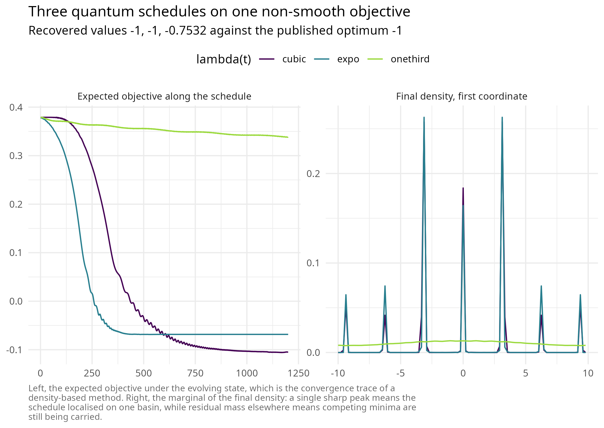
Classical simulation, complexity and the resolution floor
The quantum Fourier transform is, on classical hardware, exactly a fast Fourier transform, so the split-step Fourier method of Feit, Fleck and Steiger [15] simulates the evolution directly. On an \(N^d\) grid over the periodic box of half-period \(L\), each of the \(K\) steps applies the potential phase \(e^{-i h \lambda(t) f(x)}\) pointwise, transforms, applies the kinetic phase \(e^{-i h \lVert k \rVert^2 / (2\lambda(t))}\) with \(k = \pi n / L\), and transforms back, at total cost
\[O\!\left(K\, N^d \log N\right)\]
in time and \(O(N^d)\) in memory. The package parallelises the phase multiplies over grid cells with OpenMP and uses a vendored pocketfft for the transforms; the norm is monitored every step and its drift reported as a unitarity diagnostic.
Two hard walls follow from the same \(N^d\) scaling and are enforced rather than hoped for. Memory caps the dimension at three and the cell count at \(2^{24}\), with an explicit estimate printed in the error message. And the attainable accuracy is bounded below by the grid spacing \(\Delta x = 2L/N\), so on objectives with a sharp cusp at the minimizer the gap stalls at the resolution floor rather than continuing to fall. This is a property of the discretization, not a defect of the method.
| benchmark | N | gap | spacing | drift |
|---|---|---|---|---|
| xinsheyang04 | 32 | 0.000000 | 0.6250000 | 7.0e-16 |
| xinsheyang04 | 64 | 0.000000 | 0.3125000 | 9.0e-16 |
| xinsheyang04 | 128 | 0.000000 | 0.1562500 | 1.6e-15 |
| xinsheyang04 | 256 | 0.000000 | 0.0781250 | 3.1e-15 |
| ackley | 32 | 3.618655 | 1.4062500 | 6.0e-16 |
| ackley | 64 | 2.531167 | 0.7031250 | 9.0e-16 |
| ackley | 128 | 1.924699 | 0.3515625 | 9.0e-16 |
| ackley | 256 | 2.150386 | 0.1757812 | 1.6e-15 |
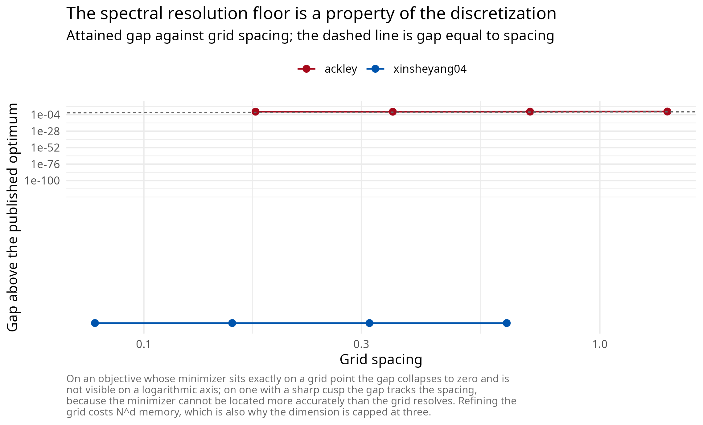
The first benchmark is recovered exactly; the second exhibits the resolution floor, its gap set by the spacing of the grid rather than by the number of steps. The norm drift in both cases is at machine precision, which is the evidence that the splitting is being applied faithfully.
Part V: the statistical layer
Inverse problems as optimization
An inverse problem supplies a model \(g(\theta)\) producing predictions
conformable with observations \(y\),
and asks for the \(\theta\) minimising
a loss. The package normalises three cases into one objective through
sym_inverse(). Weighted least squares,
\[\mathcal{L}_{\mathrm{lsq}}(\theta) = \sum_i w_i\big(g_i(\theta) - y_i\big)^2,\]
is the default. The Gaussian negative log-likelihood with known observation standard deviation \(\sigma\),
\[\mathcal{L}_{\mathrm{nll}}(\theta) = \frac{1}{2\sigma^2}\sum_i \big(g_i(\theta) - y_i\big)^2 + n\log\sigma + \frac{n}{2}\log 2\pi,\]
differs from it by an affine transformation and therefore has the same minimizer, but its value is on the likelihood scale and is comparable across models. A custom functional covers everything else, including the logarithmic-scale losses that abundance data usually require.
For a dynamical model the predictions come from integrating the
system at the candidate parameters and interpolating the simulated
states at the observation times, which is trajectory matching
in the sense of Ramsay, Hooker, Campbell and Cao [16]. This is where the system_spec
method of sym_inverse() dispatches.
The cost model, and why it dictates the solver
When no analytic gradient is available the package generates a central finite-difference gradient,
\[g_i(\theta) \approx \frac{\mathcal{L}(\theta + h_i e_i) - \mathcal{L}(\theta - h_i e_i)}{2 h_i},\]
whose truncation error is \(O(h_i^2)\) and whose cost is \(2d\) objective evaluations. For a trajectory-matching objective one objective evaluation is one full integration of the system, so one gradient costs \(2d\) integrations. A method converging in a few hundred iterations rather than tens of thousands is therefore not a marginal improvement but the difference between a feasible and an infeasible fit, which is the practical argument for the restarted Bregman kernels on this class of problem.
Estimators for aperiodic records
Trajectory matching compares a simulated path to an observed one over the whole record. For a system with sensitive dependence on initial conditions this is the wrong comparison: simulated and observed phases decohere on the Lyapunov time scale, and beyond it the residual measures phase error rather than parameter error. This is the failure that motivates synthetic likelihood [19].
Conditional one-step-ahead prediction avoids it. Writing the model as a map \(N_{t+1} = F(N_t, \ldots, N_{t-k}; \theta)\), each prediction is conditioned on the observed state,
\[\mathcal{L}(\theta) = \sum_t \Big(\log F\big(N_t, \ldots, N_{t-k};\, \theta\big) - \log N_{t+1}\Big)^2,\]
so no phase error accumulates. The shipped blowfly record is the worked case: the delayed-recruitment model of Gurney, Blythe and Nisbet [20] on the two-day sampling grid, with three free parameters, which is exactly the dimension ceiling of the quantum solver.
main <- subset(nicholson_blowfly, population == "main")
N <- main$count; k <- 7L
idx <- seq.int(k + 1L, length(N) - 1L)
predict_step <- function(theta) {
log(exp(theta[1]) * N[idx - k] * exp(-N[idx - k] / exp(theta[2])) +
N[idx] * exp(-exp(theta[3])) + 1)
}
obj_bf <- sym_inverse(predict_step, data = log(N[idx + 1L] + 1),
obs_times = main$day[idx + 1L],
theta_bounds = list(
lo = c(logP = log(0.05), logN0 = log(50), logdelta = log(0.005)),
hi = c(logP = log(50), logN0 = log(20000), logdelta = log(3))))
global <- sym_optim(obj_bf, method = "qhd", seed = 1,
control = sym_control("qhd", N_grid = 48, K = 1200))
refined <- sym_optim(obj_bf, x0 = global$x_best, method = "slc_expo",
control = sym_control("slc_expo", C = 0.1, h = 1.5,
max_iter = 3000, tol_grad = 1e-9))
reference <- stats::optim(global$x_best,
function(p) sum((predict_step(p) - log(N[idx + 1L] + 1))^2),
method = "L-BFGS-B", lower = obj_bf$lower, upper = obj_bf$upper,
control = list(maxit = 1000, factr = 1e2))| Stage | Loss | P | N0 | delta |
|---|---|---|---|---|
| Quantum global scan | 28.51143 | 8.891397 | 368.4031 | 0.1826754 |
| Symplectic refinement | 28.43223 | 10.868603 | 344.5695 | 0.1942301 |
| L-BFGS-B reference | 28.43223 | 10.868620 | 344.5693 | 0.1942302 |
Because sym_inverse() retains the observations and the
prediction map, the fit plots against its own data without the record
having to be carried alongside it, and its dashboard leads with the fit
rather than with the solver. Each prediction is conditioned on the
observed state, so what the first panel measures is one-step predictive
accuracy and not long-run trajectory agreement, which for an aperiodic
system observed with noise is not an identifiable target at all.
plot(refined, type = "observed")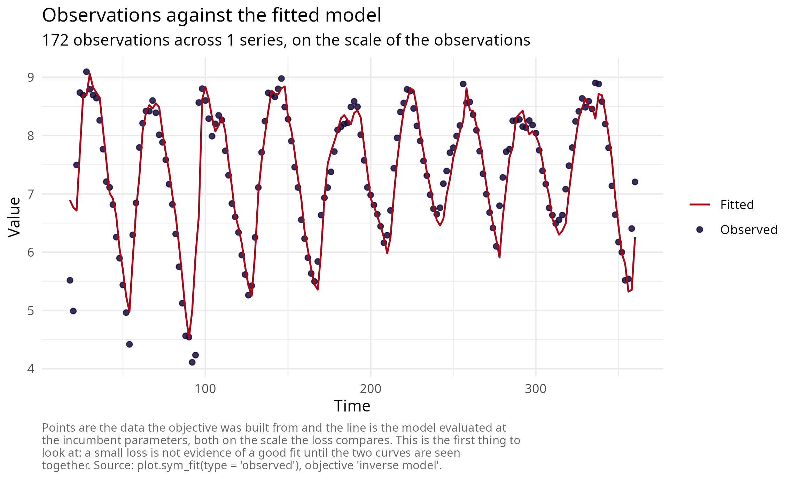
plot(refined, type = "dashboard")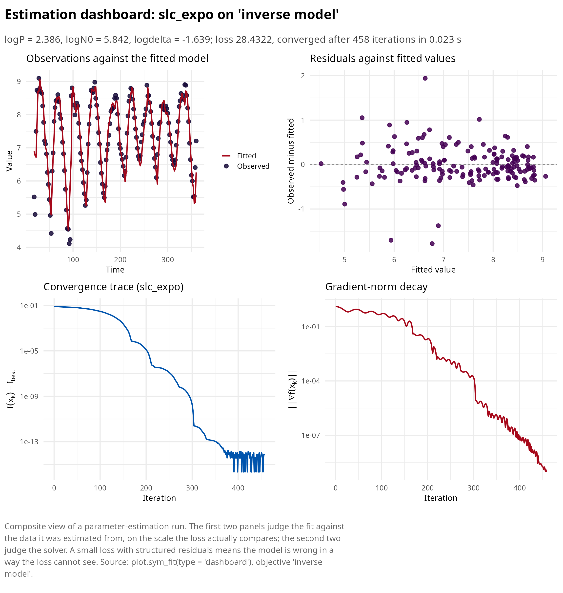
The two stages are complementary and neither is sufficient: the global scan cannot resolve below its grid spacing, and the local method cannot leave the basin it starts in. Their composition reaches the reference optimum, and the agreement with an independent quasi-Newton solver on the identical objective is the evidence that the optimum is a property of the problem rather than of the algorithm.
Conditioning, sloppiness and identifiability
Likelihood surfaces of dynamical models are routinely ill conditioned, and for a structural rather than an accidental reason: parameters enter with different physical dimensions and act on different time scales, so the Hessian eigenvalues at the optimum span decades. The phenomenon is general enough to have its own name, sloppiness, and its own literature [17]; the associated practical question, whether a parameter is determined by the data at all, is practical identifiability, diagnosed by profile likelihood [18].
Two mitigations cost nothing and are worth making default. Estimate rate and capacity parameters on the logarithmic scale, which simultaneously equalises their magnitudes and enforces positivity; and choose bounds so that the admissible ranges are comparable in width. The chunk below measures what the first buys on the fit just computed, by evaluating the Hessian of the same loss at the same optimum in both parameterizations.
hessian_fd <- function(fn, x, h = 1e-4) {
d <- length(x); H <- matrix(0, d, d)
step <- h * pmax(abs(x), 1)
for (i in seq_len(d)) for (j in seq_len(d)) {
ei <- ej <- numeric(d); ei[i] <- step[i]; ej[j] <- step[j]
H[i, j] <- (fn(x + ei + ej) - fn(x + ei - ej) - fn(x - ei + ej) + fn(x - ei - ej)) /
(4 * step[i] * step[j])
}
(H + t(H)) / 2
}
loss_log <- function(u) sum((predict_step(u) - log(N[idx + 1L] + 1))^2)
loss_nat <- function(v) loss_log(log(v)) # same surface, natural coordinates
theta_log <- as.numeric(refined$x_best)
H_log <- hessian_fd(loss_log, theta_log)
H_nat <- hessian_fd(loss_nat, exp(theta_log))| Coordinates | Condition number | Smallest eigenvalue | Largest eigenvalue |
|---|---|---|---|
| logarithmic | 53.2188 | 3.2165 | 171.1760 |
| natural | 1070426.3647 | 0.0002 | 264.0847 |
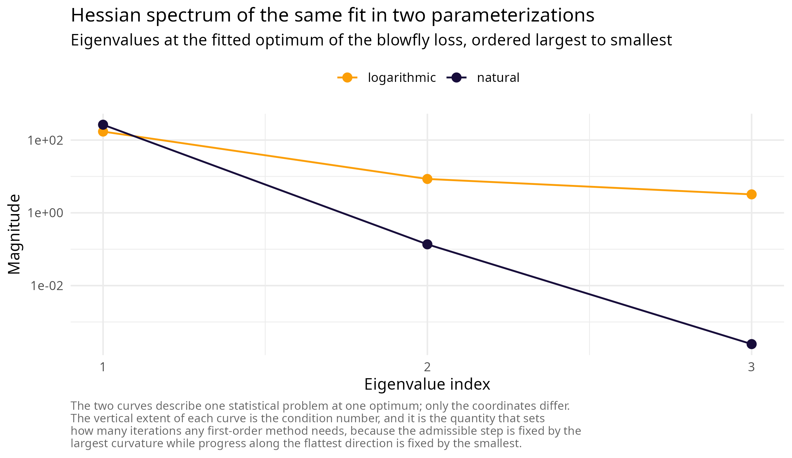
The two rows describe the same statistical problem at the same optimum; only the coordinates differ. Reparameterizing by \(\theta = e^{u}\) multiplies row and column \(i\) of the Hessian by \(\theta_i\), so parameters whose natural magnitudes differ by orders of magnitude contribute a large condition number before any dynamics are involved. Since the admissible step of every method in the package is set by the largest curvature while progress along the flattest direction is set by the smallest, that ratio is exactly the quantity that governs how many iterations a fit costs.
Part VI: literature by lineage
Momentum and acceleration
The line begins with Polyak’s heavy ball [21], which added a momentum term to gradient descent and analysed its local rate on quadratics, and with Nesterov’s 1983 scheme attaining the optimal \(O(1/k^2)\) rate for smooth convex problems; the modern textbook synthesis is Nesterov’s Lectures on convex optimization [1]. Beck and Teboulle’s FISTA [22] carried the same estimate-sequence machinery to composite objectives and made it the default in imaging and statistics. O’Donoghue and Candès [11] showed that a simple restart rule recovers the linear rate that the fixed momentum schedule loses on strongly convex problems, which is the ancestor of the restart safeguard implemented here.
Differential-equation and variational reformulations
Su, Boyd and Candès identified \(\ddot X + \tfrac{3}{t}\dot X + \nabla f(X) = 0\) as the continuous limit of Nesterov’s method and used it to explain the oscillation and to design restart rules. Wibisono, Wilson and Jordan [4] generalised the observation into the Bregman Lagrangian and the ideal scaling conditions, establishing that the entire family is one curve under time dilation and locating the difficulty in the discretization. Shi, Du, Jordan and Su [23] refined the correspondence with high-resolution differential equations that distinguish heavy ball from Nesterov at the level of the limiting flow, a distinction the low-resolution limit erases. Attouch, Peypouquet and Redont [24] added Hessian-driven damping, which suppresses oscillation at the cost of a term with no simple Lagrangian, which is the reason it is absent from this package.
Geometric numerical integration
The reference works are Hairer, Lubich and Wanner [2] for backward error analysis and structure preservation, Leimkuhler and Reich [25] for Hamiltonian simulation practice, Marsden and West [26] for the discrete-variational viewpoint in which integrators are derived from a discretized action rather than from the equations of motion, and McLachlan and Quispel [10] for splitting methods and their order theory. The classical composition results are Trotter’s [8] and Strang’s [9].
Dissipative and conformal structure
Franca, Sulam, Robinson and Vidal [6] established the conformal symplectic classification of momentum methods and introduced relativistic gradient descent. Franca, Jordan and Vidal [7] developed the presymplectic theory for explicitly time-dependent dissipative Hamiltonians and proved the rate-matching theorem with its validity condition. Betancourt, Jordan and Wilson [27] framed the same material through the extended phase space and the conserved extended Hamiltonian that the package’s optional monitor tracks. Duruisseaux and Leok [5] supplied the practice layer: fully explicit compositions, the two safeguards, the \((C, h)\) tuning study and the near dimension-independence of the convergent region; their companion work extends the construction to Riemannian manifolds [28], which is the natural direction for a future non-Euclidean release.
Quantum-inspired optimization
Leng, Hickman, Li and Wu [12] introduced quantum Hamiltonian descent as the quantization of the Bregman Hamiltonian, and Leng and colleagues [29] extended it to non-smooth objectives, established the global-convergence guarantee under local Lipschitz continuity, and assembled the twelve-function benchmark suite that ships with this package. The classical simulation rests on the split-step Fourier method [15]; the theoretical ingredients are the adiabatic theorem [13] and Weyl’s law [14].
Parameter estimation for dynamical models
Trajectory matching and its generalized-smoothing refinement are due to Ramsay, Hooker, Campbell and Cao [16]. The conditioning pathology of these problems was characterised as sloppiness by Gutenkunst and colleagues [17], and practical identifiability by profile likelihood by Raue and colleagues [18]. For records generated by aperiodic dynamics, Wood’s synthetic likelihood [19] is the reference treatment, and the blowfly cages of Nicholson [30] modelled by the delayed-recruitment equation of Gurney, Blythe and Nisbet [20] are its canonical example.
References
[1] Nesterov, Y. (2018). Lectures on convex optimization (2nd ed.). Springer. https://doi.org/10.1007/978-3-319-91578-4
[2] Hairer, E., Lubich, C., & Wanner, G. (2006). Geometric numerical integration: structure-preserving algorithms for ordinary differential equations (2nd ed.). Springer. https://doi.org/10.1007/3-540-30666-8
[3] Bregman, L. M. (1967). The relaxation method of finding the common point of convex sets and its application to the solution of problems in convex programming. USSR Computational Mathematics and Mathematical Physics, 7(3), 200-217. https://doi.org/10.1016/0041-5553(67)90040-7
[4] Wibisono, A., Wilson, A. C., & Jordan, M. I. (2016). A variational perspective on accelerated methods in optimization. Proceedings of the National Academy of Sciences, 113(47), E7351-E7358. https://doi.org/10.1073/pnas.1614734113
[5] Duruisseaux, V., & Leok, M. (2023). Practical perspectives on symplectic accelerated optimization. Optimization Methods and Software, 38(6), 1230-1268. https://doi.org/10.1080/10556788.2023.2214837
[6] Franca, G., Sulam, J., Robinson, D. P., & Vidal, R. (2020). Conformal symplectic and relativistic optimization. Advances in Neural Information Processing Systems, 33, 16916-16926. https://proceedings.neurips.cc/paper/2020/hash/c4b108f53550f1d5967305a9a8140ddd-Abstract.html
[7] Franca, G., Jordan, M. I., & Vidal, R. (2021). On dissipative symplectic integration with applications to gradient-based optimization. Journal of Statistical Mechanics: Theory and Experiment, 2021(4), 043402. https://doi.org/10.1088/1742-5468/abf5d4
[8] Trotter, H. F. (1959). On the product of semi-groups of operators. Proceedings of the American Mathematical Society, 10(4), 545-551. https://doi.org/10.1090/S0002-9939-1959-0108732-6
[9] Strang, G. (1968). On the construction and comparison of difference schemes. SIAM Journal on Numerical Analysis, 5(3), 506-517. https://doi.org/10.1137/0705041
[10] McLachlan, R. I., & Quispel, G. R. W. (2002). Splitting methods. Acta Numerica, 11, 341-434. https://doi.org/10.1017/S0962492902000053
[11] O’Donoghue, B., & Candès, E. (2015). Adaptive restart for accelerated gradient schemes. Foundations of Computational Mathematics, 15(3), 715-732. https://doi.org/10.1007/s10208-013-9150-3
[12] Leng, J., Hickman, E., Li, J., & Wu, X. (2023). Quantum Hamiltonian descent. arXiv preprint arXiv:2303.01471. https://doi.org/10.48550/arXiv.2303.01471
[13] Born, M., & Fock, V. (1928). Beweis des Adiabatensatzes. Zeitschrift fur Physik, 51(3-4), 165-180. https://doi.org/10.1007/BF01343193
[14] Ivrii, V. (2016). 100 years of Weyl’s law. Bulletin of Mathematical Sciences, 6(3), 379-452. https://doi.org/10.1007/s13373-016-0089-y
[15] Feit, M. D., Fleck, J. A., & Steiger, A. (1982). Solution of the Schrodinger equation by a spectral method. Journal of Computational Physics, 47(3), 412-433. https://doi.org/10.1016/0021-9991(82)90091-2
[16] Ramsay, J. O., Hooker, G., Campbell, D., & Cao, J. (2007). Parameter estimation for differential equations: a generalized smoothing approach. Journal of the Royal Statistical Society Series B: Statistical Methodology, 69(5), 741-796. https://doi.org/10.1111/j.1467-9868.2007.00610.x
[17] Gutenkunst, R. N., Waterfall, J. J., Casey, F. P., Brown, K. S., Myers, C. R., & Sethna, J. P. (2007). Universally sloppy parameter sensitivities in systems biology models. PLoS Computational Biology, 3(10), e189. https://doi.org/10.1371/journal.pcbi.0030189
[18] Raue, A., Kreutz, C., Maiwald, T., Bachmann, J., Schilling, M., Klingmuller, U., & Timmer, J. (2009). Structural and practical identifiability analysis of partially observed dynamical models by exploiting the profile likelihood. Bioinformatics, 25(15), 1923-1929. https://doi.org/10.1093/bioinformatics/btp358
[19] Wood, S. N. (2010). Statistical inference for noisy nonlinear ecological dynamic systems. Nature, 466(7310), 1102-1104. https://doi.org/10.1038/nature09319
[20] Gurney, W. S. C., Blythe, S. P., & Nisbet, R. M. (1980). Nicholson’s blowflies revisited. Nature, 287(5777), 17-21. https://doi.org/10.1038/287017a0
[21] Polyak, B. T. (1964). Some methods of speeding up the convergence of iteration methods. USSR Computational Mathematics and Mathematical Physics, 4(5), 1-17. https://doi.org/10.1016/0041-5553(64)90137-5
[22] Beck, A., & Teboulle, M. (2009). A fast iterative shrinkage-thresholding algorithm for linear inverse problems. SIAM Journal on Imaging Sciences, 2(1), 183-202. https://doi.org/10.1137/080716542
[23] Shi, B., Du, S. S., Jordan, M. I., & Su, W. J. (2022). Understanding the acceleration phenomenon via high-resolution differential equations. Mathematical Programming, 195(1-2), 79-148. https://doi.org/10.1007/s10107-021-01681-8
[24] Attouch, H., Peypouquet, J., & Redont, P. (2016). Fast convex optimization via inertial dynamics with Hessian driven damping. Journal of Differential Equations, 261(10), 5734-5783. https://doi.org/10.1016/j.jde.2016.08.020
[25] Leimkuhler, B., & Reich, S. (2005). Simulating Hamiltonian dynamics. Cambridge University Press. https://doi.org/10.1017/CBO9780511614118
[26] Marsden, J. E., & West, M. (2001). Discrete mechanics and variational integrators. Acta Numerica, 10, 357-514. https://doi.org/10.1017/S096249290100006X
[27] Betancourt, M., Jordan, M. I., & Wilson, A. C. (2018). On symplectic optimization. arXiv preprint arXiv:1802.03653. https://doi.org/10.48550/arXiv.1802.03653
[28] Duruisseaux, V., & Leok, M. (2022). Accelerated optimization on Riemannian manifolds via discrete constrained variational integrators. Journal of Nonlinear Science, 32(4), 42. https://doi.org/10.1007/s00332-022-09795-9
[29] Leng, J., Zheng, Y., Jia, Z., Fan, L., Zhao, C., Peng, Y., & Wu, X. (2025). Quantum Hamiltonian descent for non-smooth optimization. arXiv preprint arXiv:2503.15878. https://doi.org/10.48550/arXiv.2503.15878
[30] Nicholson, A. J. (1957). The self-adjustment of populations to change. Cold Spring Harbor Symposia on Quantitative Biology, 22, 153-173. https://doi.org/10.1101/sqb.1957.022.01.017